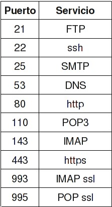

La dirección IP es un número que identifica, de manera lógica y jerárquica, a una Interfaz en red (elemento de comunicación/conexión) de un dispositivo (computadora, tableta, portátil, teléfono inteligente) que utilice el protocolo IP o (Internet Protocol), que corresponde al nivel de red del modelo TCP/IP.
¿Qué clases de Direcciones IP existen?
Las direcciones IP se organizan en clases A, B y C que son diferentes rangos de direcciones IP. Se utilizan las direcciones IP de una clase u otra en función del tamaño de la red en la que se vayan a usar:
Clase A: direcciones IP que van de la 0.0.0.0 a la 127.255.255.255. Estas direcciones IP se usan para redes grandes, generalmente de empresas internacionales. El primer bloque numérico se usa para identificar a la red, mientras que los otros tres bloques numéricos se usan para identificar a los dispositivos de cada red (RRR.DDD.DDD.DDD). Esto permite crear 126 redes distintas y tener 16.777.214 dispositivos en cada red, es decir, pocas redes y muchos dispositivos por cada red que es justo lo que necesitan las empresas internacionales.
Clase B: direcciones IP que van de la 128.0.0.0 a la 191.255.255.255. Estas direcciones IP se usan para redes de tamaño mediano, generalmente de empresas nacionales, instituciones o universidades. Los dos primeros bloques numéricos se usan para identificar a la red, mientras que los otros dos bloques numéricos se usan para identificar a los dispositivos de cada red (RRR.RRR.DDD.DDD). Esto permite crear 16.384 redes distintas y tener 65.534 dispositivos en cada red.
Clase C: direcciones IP que van de la 192.0.0.0 a la 223.255.255.255. Estas direcciones IP se usan para redes de tamaño pequeño, generalmente empresas pequeñas o redes domesticas. Son las direcciones IP que usamos el 99% de la población. Los tres primeros bloques numéricos se usan para identificar a la red, mientras que el otro bloque numérico se usa para identificar a los dispositivos de cada red (RRR.RRR.RRR.DDD). Esto permite crear 2.097.152 redes distintas y tener 254 dispositivos en cada red, es decir, muchas redes y pocos dispositivos por cada red que es justo lo que necesitan las empresas pequeñas o lo que necesitamos nosotros en nuestras casas.
La Mac Address o dirección Mac es una identificador único de 48 bits para identificar la totalidad de dispositivos de red como por ejemplo tarjetas de red Ethernet, tarjetas de red wifi o inalambricas, Switch de red, Routers, impresoras, etc.
Las direcciones MAC son identificadores únicos a nivel mundial para cada dispositivo y por lo tanto es imposible encontrar 2 tarjetas de red o 2 dispositivos de red que tengan la misma Mac Address.
El proveedor de servicios de Internet, (ISP, por la sigla en inglés de Internet service provider) es la empresa que brinda conexión a Internet a sus clientes. Un ISP conecta a sus usuarios a Internet a través de diferentes tecnologías como DSL, cablemódem, GSM, dial-up, etc.
Los números de puerto en el rango de 0 a 1023 son los llamados puertos bien conocidos (en inglés, well-known port) o también denominados puertos de sistema (sistema binario: de 0 a 210.

TCP/IP son las siglas de Protocolo de Control de Transmisión/Protocolo de Internet (en inglés Transmission Control Protocol/Internet Protocol), un sistema de protocolos que hacen posibles servicios Telnet, FTP, E-mail, y otros entre ordenadores que no pertenecen a la misma red.
La redirección de puertos, a veces llamado tunelado de puertos, es la acción de redirigir un puerto de red de un nodo de red a otro. Esta técnica puede permitir que un usuario externo tenga acceso a un puerto en una dirección IP privada desde el exterior vía un router con NAT activado.
Un servidor Web es un programa que utiliza el protocolo de transferencia de hiper texto, HTTP (Hypertext Transfer Protocol), para servir los archivos que forman páginas Web a los usuarios, en respuesta a sus solicitudes, que son reenviados por los clientes HTTP de sus computadoras.
puerta de enlace es el dispositivo que actúa de interfaz de conexión entre aparatos o dispositivos, y también posibilita compartir recursos entre dos o más ordenadores. Su propósito es traducir la información del protocolo utilizado en una red inicial, al protocolo usado en la red de destino.
En una red, las direcciones IP Privadas deberán ser únicas para cada dispositivo o al duplicarlas surgirán problemas. Volviendo al ejemplo del servicio de paquetería, sería como si dos vecinos.
Si tuvieran el mismo nombre y la misma dirección, haciendo imposible saber a quién de ellos se deberá realizar la entrega.
Las direcciones IP Públicas son siempre únicas, es decir, no se pueden repetir. Dos equipos con IP de ese tipo pueden conectarse directamente entre sí, por ejemplo, tu router con un servidor web o dos servidores web entre sí.
DNS o sistema de nombres de dominio es un sistema de nomenclatura jerárquico descentralizado para dispositivos conectados a redes IP como Internet o una red privada. Este sistema asocia información variada con nombre de dominio asignado a cada uno de los participantes.
Un firewall es un dispositivo de seguridad de la red que monitorea el tráfico de red -entrante y saliente- y decide si permite o bloquea tráfico específico en función de un conjunto definido de reglas de seguridad. Los firewalls han constituido una primera línea de defensa en seguridad de la red durante más de 25 años.
Cuando compras un dominio, lo que adquieres, por decirlo de una manera sencilla, es el derecho a usar un determinado nombre en internet (como por ejemplo, panaderiaalberto.com), para que la gente visite tu web, o te envíe emails. En definitiva, registrar un dominio es solo es eso, registrar el nombre y poder apuntarlo a un hosting asignando unos servidores DNS. El dominio por sí solo no hace nada, pero es imprescindible.
El alojamiento web (hosting) es un conjunto de servicios que se pueden usar con cualquier dominio. Se contratan y renuevan aparte. Por ejemplo: espacio en un servidor para instalar WordPress, usar un constructor web, subir tu web por FTP, crear cuentas de correo o bases de datos.
FTP (File Transfer Protocol) es un protocolo de transferencia de archivos entre sistemas conectados a una red TCP basado en la arquitectura cliente-servidor, de manera que desde un equipo cliente nos podemos conectar a un servidor para descargar archivos desde él o para enviarle nuestros propios archivos
HTML es un lenguaje de marcado que se utiliza para el desarrollo de páginas de Internet. Se trata de la sigla que corresponde a HyperText Markup Language, es decir, Lenguaje de Marcas de Hipertexto, que podría ser traducido como Lenguaje de Formato de Documentos para Hipertexto.
El CSS (hojas de estilo en cascada) es un lenguaje que define la apariencia de un documento escrito en un lenguaje de marcado (por ejemplo, HTML). ... Esta separación entre la estructura y la presentación es muy importante, ya que permite que sólo cambiando los CSS se modifique completamente el aspecto de una página web.
En conclusión, todos estos conceptos son fundamentales para trabajar en las áreas de las carreras de IAS e ITS, tener conocimientos sobre esto marcara la diferencia cuando entremos en la industria y mostrara la preparación de cada uno para realizar su trabajo. Yo mismo no tenia conocimiento sobre algunos de estos y gracias a esta práctica aprendí mucho de esto y creo que sin duda cada uno de estos conceptos son esenciales y muchos más que desencadenan estos mismos.
José López Vázquez 1884381
Como conclusión se logró darle práctica a los conceptos que nos proporcionaba esta práctica de laboratorio de programación web y también se aclararon dudas que tuvieron varios integrantes incluyéndome a mi y se está muy contento por eso.
Se aprendió a desarrollar el index de una página web y darle más mantenimiento a partir de los conocimientos proporcionados por el ingeniero y logramos el objetivo que se tenía previsto desde antes de la práctica.
Marcos Osiel Olvera López 1859023
En conclusion con esta practica tuvimos la oportunidad de poner en practica los conceptos vistos en la clase para realizar el index de la pagina web, aunque estuvo complicada ya que habia varios errores conforme le hibamos dando estructura al mismo pero investigando un poco pudimos resolverlo y aclarar las dudas que surgian.
Treviño Páez 1873930
Después de leer los conceptos de esta práctica concluye que se refuerzan los conocimientos basicos para, crear, diseñar y el hardware necesario para hospedar una página en servicios web,
tales como la tecnología que se usa para cada tipo de servicio, el uso de direcciones IP para la redirección hacia objetos o direcciones de paginas y llegado a esto las diferencias entre hosting y dominio de página,
en resumen en esta práctica se ve de forma global como crear una página y lanzarla a internet.
Edson Asael Corona Encina 1835294
En conclusión gracias a toda la información juntada por el equipo logramos apoyarnos los unos a los otros y crear un index mas completo y profesional completando los puntos donde aún no somos buenos y explicandonos los unos a los otros, con esta práctica nos ayudara a adquirir el conocimiento base para crear mas páginas web y poder cooperar en equipo
Cristopher Daniel Jáuregui Martínez 1818333